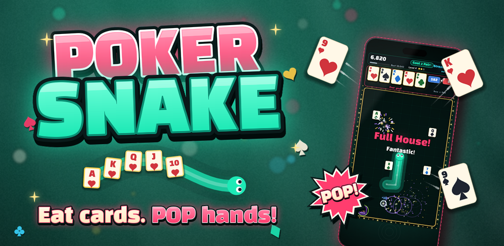

포커 스네이크
Poker Snake

한국어
먹은 카드가 꼬리에 붙어요. 꼬리 끝 카드 5장이 목표 족보 이상이면 펑! 하고 터지고, 모자라면 돌이 되어 몸에 남아요. 원페어에서 로열 플러시까지, 연속으로 터뜨리면 핫 → 피버 → 인페르노 → 슈퍼노바로 판이 달아올라요.
- 머리 옆을 톡 누르면 꺾이는 한 손 조작 (밀기·좌우 탭·방향 패드도 있어요)
- "한 장 차이!" 아깝게 놓친 카드를 알려 주는 마지막 한 장 연출
- 매일 같은 덱으로 겨루는 오늘의 덱과 랭킹
- 족보 도감, 미션, 뱀·카드·테이블 꾸미기
English
Every card you eat sticks to your tail. When the last five cards make the target poker hand or better, they go POP! Fall short and they turn to stone. From a pair to a royal flush, chain your pops to heat the table from HOT to FEVER, INFERNO and SUPERNOVA.
- One-thumb controls: tap beside the snake's head to turn (swipe, side taps and a d-pad too)
- "One card away!" near-miss moments that show exactly what you needed
- Today's Deck: the same deal for everyone, with a global leaderboard
- Hand collection, missions, and skins for your snake, cards and table